Healthcare Projects
All Portfolio Projects in the Healthcare Sector

The healthcare sector stands as a linchpin of global well-being, its significance underscored by its role in safeguarding public health, fostering innovation, and contributing to economic resilience. On a global scale, the sector grapples with diverse challenges, from infectious diseases to chronic conditions, requiring continuous adaptation and innovation. Recent data accentuates the sector's pivotal role, especially in the wake of the COVID-19 pandemic, where healthcare systems worldwide have been put to the test, highlighting the need for robust infrastructure, rapid response mechanisms, and international collaboration.
In the context of the German healthcare sector, my interest is deeply rooted in its exemplary model. Renowned for its accessibility, quality, and emphasis on preventative care, the German healthcare system epitomizes efficiency and patient-centered practices. The nation's commitment to research and innovation is evident in its embrace of cutting-edge technologies, positioning it as a global leader in medical advancements.
Overall, my fascination for the healthcare sector emanates from witnessing its transformative impact on individuals and societies. The dynamic interplay of medical breakthroughs, policy frameworks, and technological integration captivates me. Additionally, the sector's intrinsic connection to broader societal well-being aligns with my passion for making a positive impact on communities. As we navigate a future marked by demographic shifts, evolving health challenges, and the rapid integration of technology, my keen interest in the healthcare sector reflects a commitment to contributing meaningfully to the ongoing dialogue and advancements in global health. For this reason, I have chosen healthcare to be the main theme of my Data Analytics Portfolio being a great opportunity to broaden my knowledge in the sector.
Impact of COVID-19 on Hospital Capacity in the USA
Data Preprocessing, SARIMAX and RandomForestClassifier
The dataset detailing the impact of COVID-19 on hospital capacities was meticulously selected for its comprehensive scope and alignment with stringent privacy and security standards, including compliance with regulations and GDPR. This careful selection process ensures that while providing invaluable insights into the challenges faced by healthcare systems during the pandemic, it simultaneously upholds the highest standards of data privacy and security. No personal patient information is included, focusing instead on aggregated hospital capacity metrics, which sidesteps potential privacy concerns and emphasizes the project's commitment to ethical data handling practices. This approach not only respects individuals' rights but also instills trust in the data analysis process, reinforcing the importance of privacy and security in healthcare analytics.
In my project, I embarked on an in-depth analysis of the COVID-19 pandemic's impact on hospital capacity and staffing across various states in the USA, utilizing a rich dataset that explored patient impact and hospital capacity over time. The dataset was first imported into my analysis environment using Python. This initial step allowed me to gain a fundamental understanding of the dataset's structure and the nature of its inputs.
Upon initial exploration, it became evident that the dataset suffered from high dimensionality, boasting 134 columns. To refine my analysis and focus on the aspects most critical to understanding hospital capacity needs and staff shortages, I selected a subset of columns. These included state, date, critical staffing shortages today, inpatient beds used for COVID-19, total adult and pediatric patients hospitalized with confirmed COVID-19, inpatient beds, inpatient beds used, total staffed adult ICU beds, and staffed adult ICU bed occupancy. This selection process was pivotal in narrowing down the data to manageable and analytically useful dimensions.
The next step involved cleaning the data, a critical process given the presence of missing values in several columns. By dropping these missing values, I ensured the reliability and accuracy of subsequent analyses. The data was then further refined by converting the 'date' column to a datetime format, facilitating time-series analysis.
Analyzing the data revealed significant insights into hospital capacity utilization and critical staffing shortages across different states. To illustrate, I plotted the usage of inpatient beds for COVID-19 over time in states such as California, New York, Oklahoma, Texas, and Florida. These visual representations highlighted the fluctuations in bed usage, underscoring the pandemic's waves and the resultant pressures on hospital capacities.
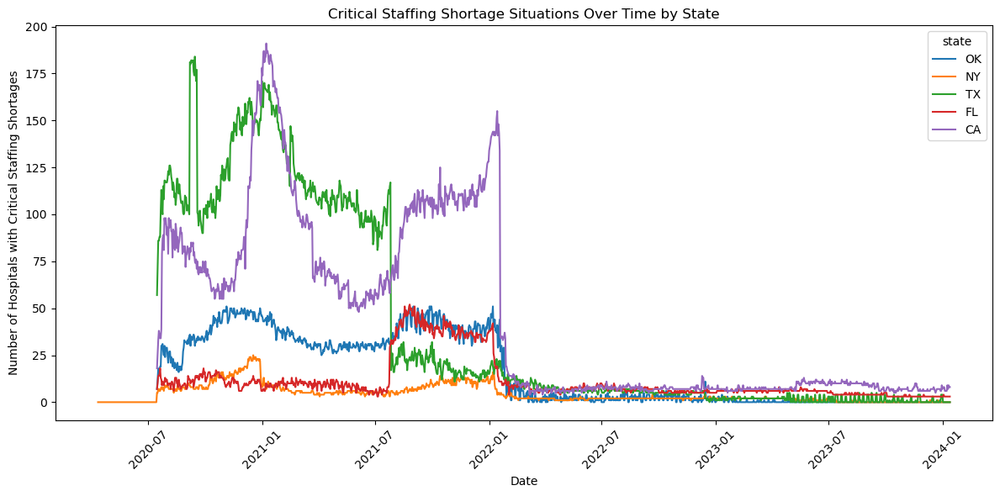 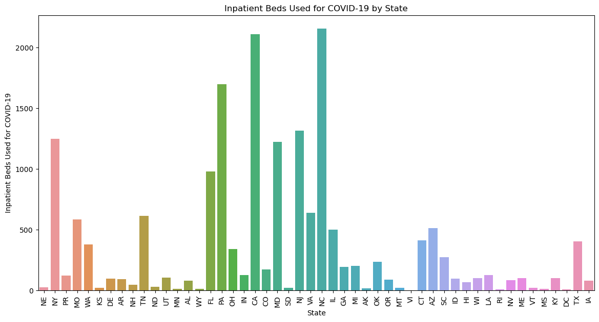Further analysis using seaborn's line plots shed light on the critical staffing shortage situations over time, particularly between July 2020 and January 2022. This analysis not only highlighted the temporal patterns of staffing shortages but also revealed the differences between states. Additionally, by calculating the national average of bed utilization and staffing shortages over time, I gained a holistic understanding of hospital capacity utilization and staffing challenges on a national scale.
To predict future hospital capacity needs, I employed time series analysis techniques, specifically the SARIMAX model. After preparing the data and ensuring its stationarity, I trained the model using data from California, forecasting the future use of inpatient beds for COVID-19. Despite the model's predictions of a continuous decrease, the actual trend showed an increase, indicating the complexity and unpredictability of the pandemic's impact on hospital capacities.

Recognizing the importance of predicting critical staffing shortages, I applied a RandomForestClassifier due to its robustness and ability to handle non-linear data without the need for feature scaling. The model achieved an accuracy of approximately 95.46%, demonstrating its efficacy in predicting hospitals facing critical staffing shortages. Given the model's success, I also explored the use of Logistic Regression for comparative analysis. However, the Logistic Regression model yielded lower accuracy and robustness, leading me to conclude that the RandomForestClassifier was the preferred model for this particular dataset.
RandomForestClassifier Code
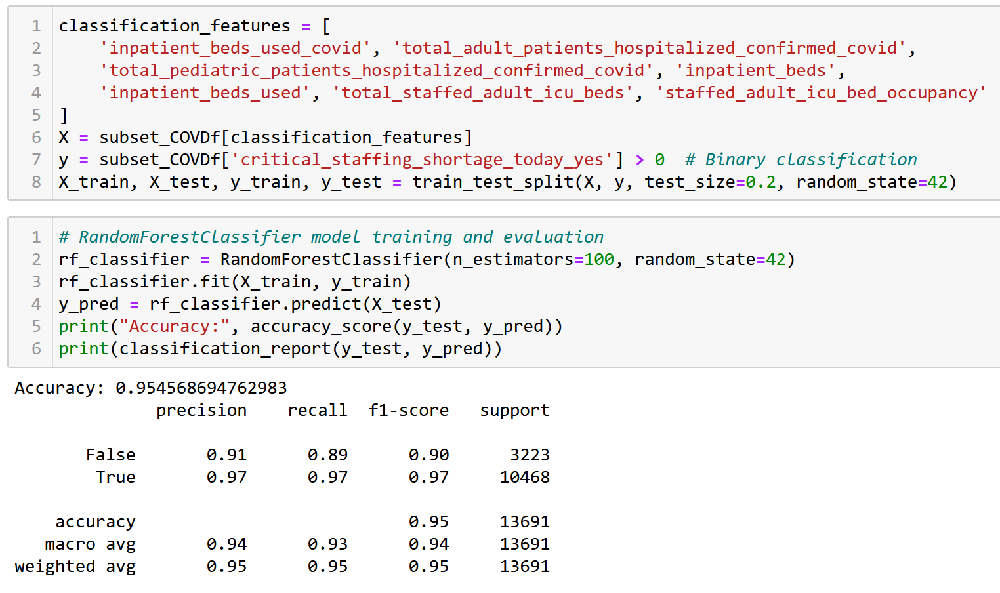This project not only provided crucial insights into the COVID-19 pandemic's impact on hospital capacities and staffing shortages in the USA but also highlighted the potential of data-driven models in forecasting future needs and challenges in healthcare settings. Through careful data processing, analysis, and modeling, I was able to uncover patterns and seasonality’s that are critical for planning and response strategies in the face of ongoing and future health crises.
Hospital Performance Metrics Analysis in the USA
Python Data Preprocessing and SQL Data Analysis
In this SQL project, I embarked on an analytical journey to uncover insights within a dataset focused on hospital performance metrics across the United States. The aim was to get insights about the dataset structure as well as a comprehensive overview of the current state of hospital care quality. Before using SQL, the dataset was cleaned in Python by filling missing values, adapting the column names so that they can be used in SQL. Utilizing PostgreSQL and applying advanced SQL querying techniques, I conducted a series of in-depth analyses. These analyses included benchmarking hospitals based on various quality measures, which revealed significant performance variances and highlighted the importance of quality assessment and improvement. I also assessed regional healthcare quality, pinpointing geographic areas with exemplary care and those facing challenges, thereby offering valuable insights for addressing regional disparities in healthcare.
Further, my exploration into the correlation between hospital type and ownership with quality scores uncovered trends that suggest operational and governance models may influence patient outcomes. This finding is particularly relevant for stakeholders interested in understanding how different hospital models impact care quality. Additionally, by analyzing the correlation between the availability of emergency services and hospital ratings, I found that hospitals with emergency services tend to have higher quality ratings, emphasizing emergency care's critical role in overall healthcare delivery.
Another key aspect of my analysis focused on how hospital ownership affects patient experience measures. This revealed that certain types of ownership are associated with better patient-reported experiences, a crucial insight for hospital administrators aiming to enhance patient satisfaction. Lastly, comparing mortality rates across states allowed me to identify variations in patient outcomes for specific conditions, offering a lens through which to view the effectiveness of healthcare practices at the state level.
Using PostgreSQL and pgAdmin 4 for database management and analysis, I employed SQL queries encompassing data aggregation and conditional logic. This project not only honed my SQL skills but also provided deep insights into the operational aspects of the healthcare industry.
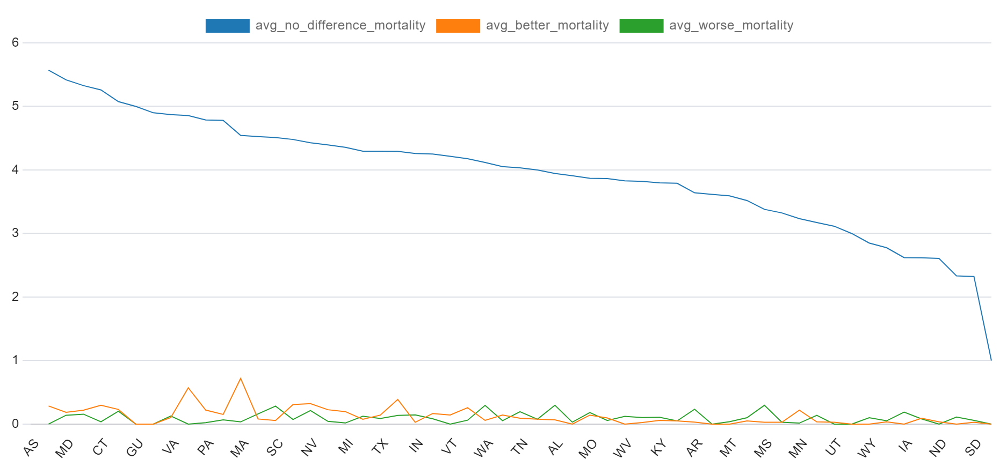 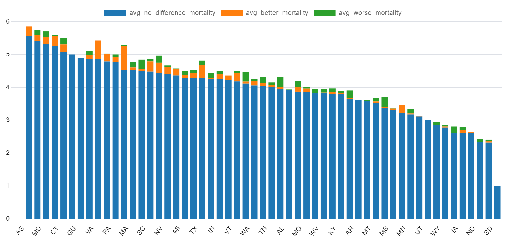The dataset for this project was carefully chosen for its comprehensive coverage of hospital performance metrics across the United States, providing a rich foundation for analysis without compromising on privacy or security. Its selection was guided by a commitment to adhere to stringent data protection laws, including GDPR, ensuring that all analyses remain within the bounds of ethical data use and regulatory compliance. This dataset, derived from publicly available, anonymized sources, allows for in-depth exploration of healthcare quality measures while avoiding the pitfalls of handling sensitive personal data. By prioritizing datasets that respect privacy and are designed with security in mind, the project underscores the importance of responsible data utilization in healthcare analytics, ensuring that insights are derived in a manner that safeguards individual privacy and upholds the highest standards of data protection.
SQL Code
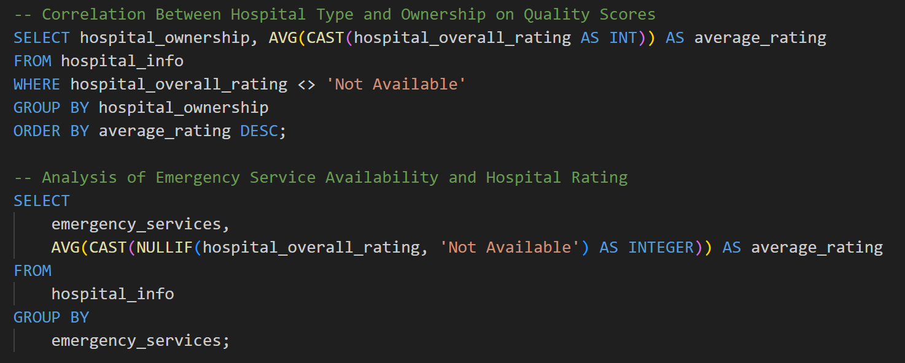Diabetes Analysis and Deep Learning
Descriptive Statistic in R and Deep Learning in Python
Overview
This comprehensive project explores the application of both descriptive statistical analysis and deep learning models to predict the onset of diabetes using a robust dataset from Kaggle. The dataset includes crucial diagnostic measures such as Glucose level, Blood Pressure, Skin Thickness, BMI, Insulin, Diabetes Pedigree Function, and Age, which are vital for identifying potential diabetes indicators.
Descriptive Statistical Analysis in R
The initial phase of the project employed R's tidyverse suite, particularly the dplyr and ggplot2 packages, to manipulate and analyze the data effectively. A critical examination of variables like Glucose and Blood Pressure in relation to diabetes outcomes was conducted. Visualization techniques highlighted significant trends, with elevated glucose levels showing a strong correlation with the incidence of diabetes. A detailed correlation matrix was constructed to elucidate the interdependencies among features, pinpointing Glucose as a key predictor. This phase underscored the predictive power of Glucose levels, the interplay between BMI and insulin resistance, and moderate correlations involving age and pregnancies, providing a foundation for further predictive modeling.
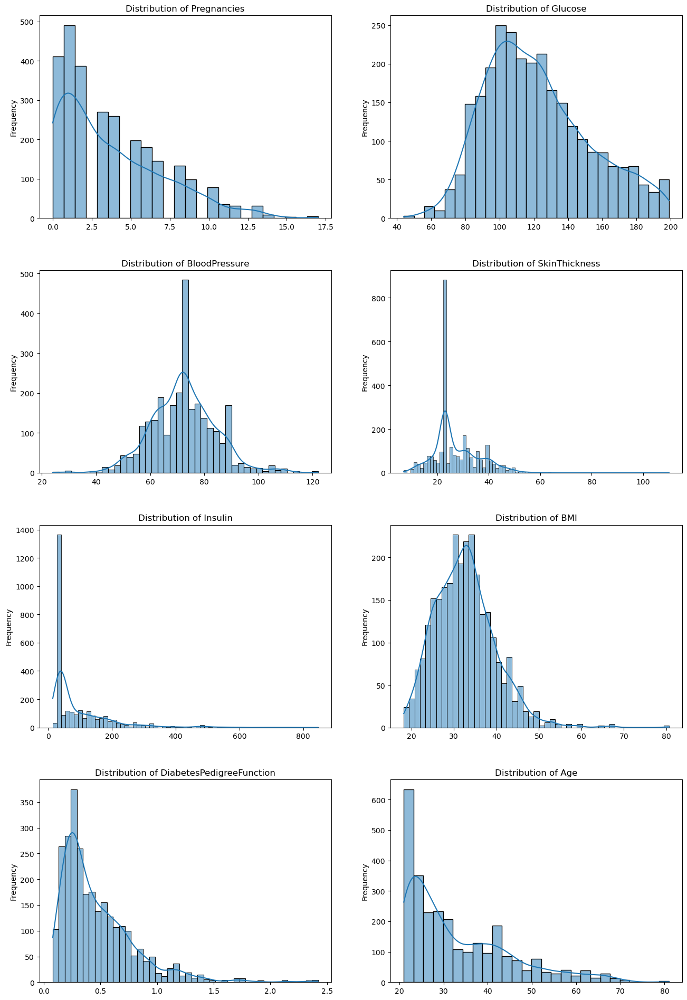 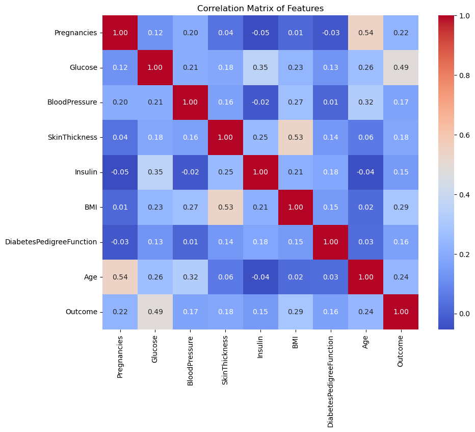Deep Learning Model for Diabetes Prediction
Subsequently, the project involved developing a deep learning model to predict the onset of diabetes based on diagnostic measures included within a healthcare dataset. The dataset, containing several medical predictors such as Glucose level, Blood Pressure, Skin Thickness, BMI, and others, was leveraged to determine its potential in predicting the binary outcome of diabetes presence. The initial step of the project focused on data preparation and preprocessing, which is critical for any machine learning task. Given that machine learning algorithms require numerical input, preprocessing involved handling potential issues such as missing values and zero entries in contexts where they were biologically implausible, like a zero Glucose level. These zero entries were replaced with the median of their respective columns to retain the integrity of the dataset while providing meaningful input for the model. The next phase centered around feature scaling to standardize the range of independent variables. This normalization ensured that each feature contributed equally to the analysis and the gradient descent optimization performed efficiently during the training phase. For the model architecture, a sequential neural network with multiple layers was constructed using TensorFlow and Keras. The network included dense layers with ReLU activation functions, interspersed with dropout layers to reduce overfitting. The model culminated in a single neuron with a sigmoid activation function to yield a binary output, reflecting the presence or absence of diabetes. Throughout the training process, which spanned 50 epochs with a batch size of 32, the model's performance was consistently monitored through validation loss and accuracy metrics. The final model achieved an accuracy of approximately 86.8% on the test dataset, a clear indication of its robustness. Feature importance was assessed using the permutation feature importance method. This method involved shuffling individual features and measuring the impact on model performance, providing a quantitative basis for feature significance. The analysis revealed which diagnostic measures were most influential, thereby offering potential insights into the physiological indicators of diabetes. The choice of the dataset was strategic, driven by the goal of understanding the application of deep learning in a critical healthcare domain. Diabetes, being a prevalent and impactful condition worldwide, presented a compelling case for the application of predictive modeling to aid in early diagnosis and management.
Model Architecture Code
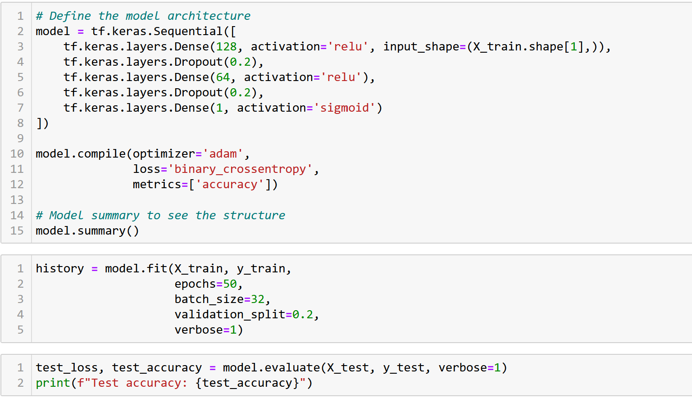Deep Learning Feature Importance Code
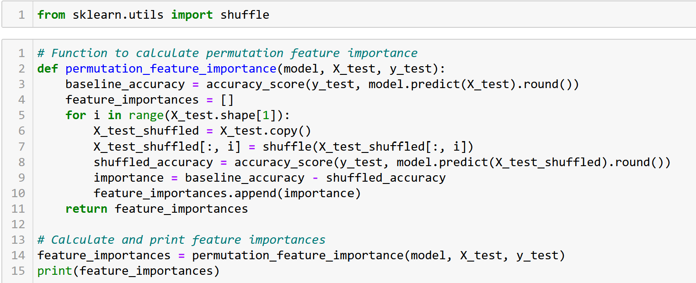Ethical Considerations and Data Privacy
Throughout the project, ethical standards and data privacy regulations, including GDPR, were rigorously adhered to. The data, thoroughly anonymized and sourced from Kaggle, ensured that no personal health information could be traced back to individuals. This not only maintained privacy but also aligned with relevant data protection regulations, crucial when handling sensitive health data.
Conclusion
Combining descriptive statistics and deep learning, this project not only demonstrated the efficacy of complex analytical methodologies in healthcare but also highlighted the importance of ethical data use and advanced machine learning techniques in the early diagnosis and management of diabetes. This structured analytical approach provided valuable insights and reinforced the potential of predictive modeling in critical healthcare applications.
Physician Retention Factor Analysis
CFA, Linear Regressions and MANCOVA
Project Overview
This research project embarked on an in-depth exploration of the factors influencing the retention of physicians in German hospitals within a post-COVID-19 context. Recognizing the critical challenges facing the healthcare sector, including a pronounced physician shortage exacerbated by the pandemic, the study aimed to provide actionable insights into improving retention strategies.
Research Design
The project utilized a quantitative research design, employing a descriptive survey methodology to collect standardized data from a broad demographic of physicians. This approach was selected for its efficiency in examining the multifaceted nature of employee retention in healthcare settings, allowing for a nuanced understanding of the various factors impacting physician loyalty to their employers.
Objectives
1. To identify and analyze the key factors influencing physician retention in German hospitals post-COVID-19.
2. To assess the applicability of the Framework of Continuance Model (FCM) in understanding physician retention, specifically within the evolving healthcare landscape.
3. To provide recommendations for healthcare policymakers and hospital administrators on enhancing physician retention strategies.
Methodology
The study leveraged a meticulously designed survey instrument, divided into two sections. The first section focused on general factors affecting physician retention, such as demographic details and employment conditions. The second section operationalized the FCM, expanded with items to explore contractual aspects of retention comprehensively. This dual approach facilitated a holistic assessment of the retention landscape for physicians in Germany. Sampling was concentrated on the German healthcare sector, targeting hospitals of various types and sizes to ensure a diverse and representative data set. The online survey, conducted using Microsoft Forms, was distributed through multiple channels to maximize engagement and participation among the target group.
Data Cleaning and Preprocessing
The project's initial analytical phase was centered around meticulous data cleaning and preprocessing, utilizing Python for its robust data manipulation capabilities. This stage was critical for ensuring the dataset's accuracy and reliability, setting a solid foundation for the complex statistical analyses that followed. The process involved several key procedures: Imputation of Missing Data involved addressing erroneous data entries through imputation techniques, mitigating the impact of missing information on the study's outcomes. Data Type Assignment required each column within the dataset to be meticulously evaluated to assign the correct data types, ensuring that subsequent analyses were based on accurately categorized information. Data Transformation included transforming thirteen categorical non-numeric variables to facilitate their inclusion in statistical models. Two primary methods were employed: One-Hot Encoding, applied to categorical variables lacking inherent order, transformed these variables into a format suitable for quantitative analysis without introducing ordinal bias, and Label Encoding, utilized for ordinal categorical variables, preserved the natural order of categories, enabling their effective incorporation into the analysis.
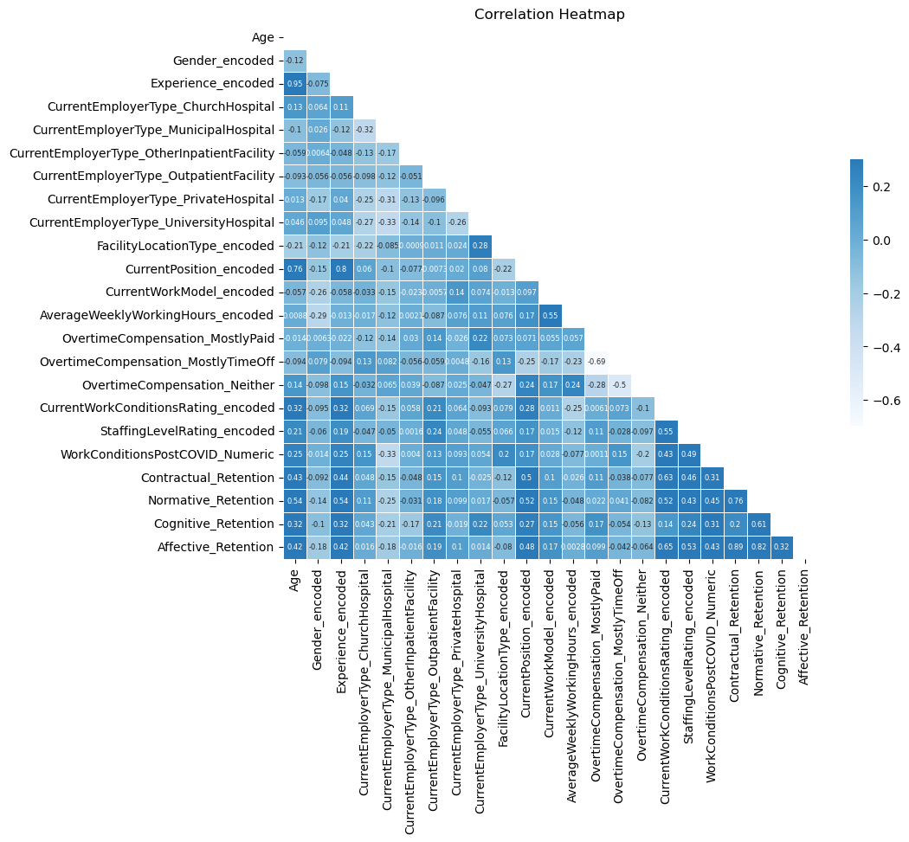Scale Reliability and Confirmatory Factor Analysis (CFA)
Scale Reliability involved the internal consistency of the scales within the Framework of Continuance Model (FCM) section being evaluated using Cronbach's Alpha, a measure revered for its utility in assessing the coherence of psychometric instruments. This step ensured that the scales accurately reflected the constructs they were intended to measure. Confirmatory Factor Analysis (CFA) was conducted to rigorously test the hypothesized structure of the FCM against the collected empirical data. Unlike Principal Component Analysis, which serves as an exploratory tool, CFA provided a methodical approach to validate the model's applicability to our dataset. The analysis focused on two main aims: General Model Fit Analysis involved assessing the model's fit using relevant statistical indicators to confirm its suitability for our data. Calculation of Factor Scores, rather than averaging item scores per component, CFA enabled the calculation of factor scores in a quasi-weighted manner, increasing the accuracy and meaningfulness of each component's overall score.
Retention Model CFA
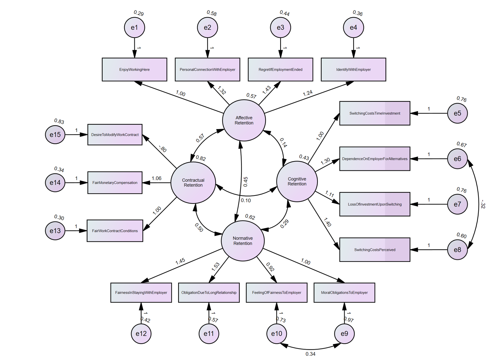Linear Regression Analysis
Following the foundational steps of data preparation and model validation, the study progressed to the execution of linear regression models. This statistical method was selected for its effectiveness in dealing with continuous dependent variables, allowing for an in-depth exploration of the relationships between various factors and their influence on physician retention. Linear regression facilitated the identification of statistically significant predictors, providing a clear understanding of the dynamics at play within the retention of physicians in German hospitals post-COVID-19.
Linear Regression Code
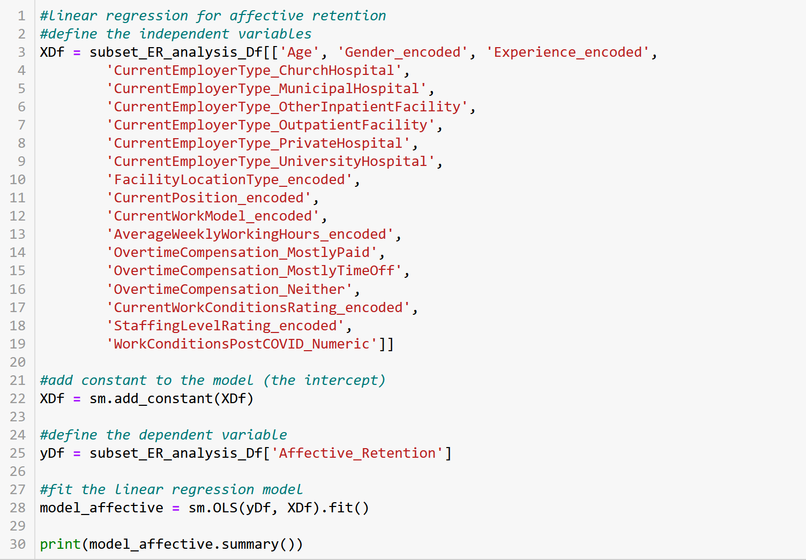MANCOVA
The MANCOVA (Multivariate Analysis of Covariance) analysis conducted in this study aimed to holistically assess the influence of various factors on retention types within a healthcare setting. Utilizing the statsmodels library in Python, specifically the MANOVA class, the analysis structured around a comprehensive set of independent variables, including encoded representations of employee experience, employer type (ranging from Church Hospitals to University Hospitals), facility location, current position, work model, average weekly working hours, overtime compensation strategies, and ratings of current work conditions and staffing levels. Additional covariates like age and gender were also included to control for potential confounding effects. The dependent variables in the model were four different types of retention: Contractual, Normative, Cognitive, and Affective Retention. To capture the multifaceted relationships among these variables, the model equation was defined to combine all predictors, including covariates, with a syntax in the MANOVA.from_formula method that specified the dependent variables combined using a + symbol and separated from the predictors with a ~. Upon fitting the MANCOVA model to a subset of the data (subset_ER_analysis_Df), the results were generated using the mv_test() method. This analysis provided insights into the general model fit and individual factor scores, thereby allowing for a nuanced understanding of how each variable contributed to various types of retention. Factor scores were calculated in a quasi-weighted manner, enhancing the accuracy and interpretability of the impact each component had on the retention outcomes. Additionally, to ensure the model's reliability, a Variance Inflation Factor (VIF) analysis was conducted.
MANCOVA Code
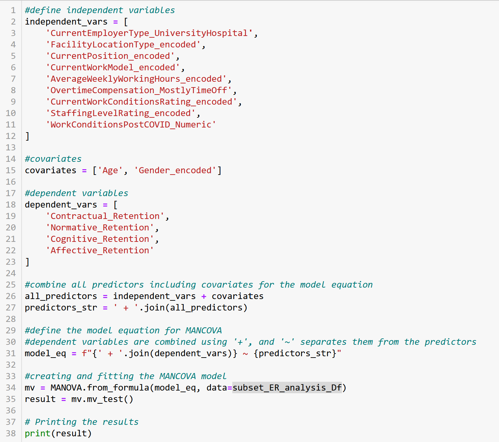Findings and Implications
The research highlighted several key determinants of physician retention, underlining the importance of fair employment conditions, monetary compensation, and contractual fairness. The application of the FCM provided valuable insights into the complex dimensions of physician retention, affirming its relevance in the post-COVID-19 healthcare context.
Unsupervised Machine Learning in Healthcare
Report on the current status of unsupervised ML in healthcare
As AI gains more prominence, the spotlight is increasingly on machine learning, a subset of AI. Our focus for the report in the Data Mining and Predictive Analytics module was on unsupervised learning, a subfield of machine learning. The report examines the application of unsupervised machine learning in the healthcare sector, delving into three exemplars with nuanced analyses. The initial examination delved into the intricacies of patient segmentation, incorporating a thorough exploration of both theoretical foundations and practical implementations. Subsequently, our attention turned to the realm of medical imaging, with a specific focus on Microsoft InnerEye's application as a representative case study. The final case pertained to fraud detection; an area predominantly situated within the realm of research with limited practical instantiation. Beyond the scrutiny of these applications and the extant research landscape, the report elucidates the potential organizational impacts and enhancements in performance and efficiency within healthcare contexts, particularly hospitals. This includes a comprehensive assessment of the attained progress thus far. For further reference, the complete report is uploaded below.